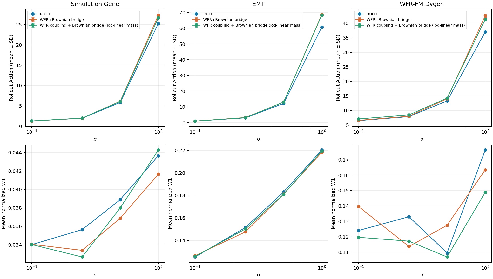
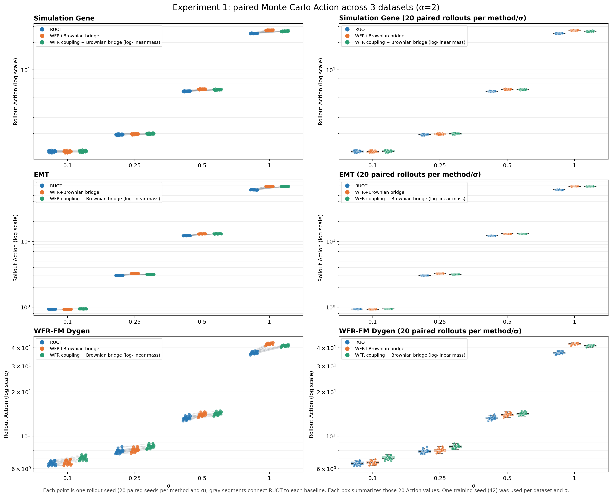
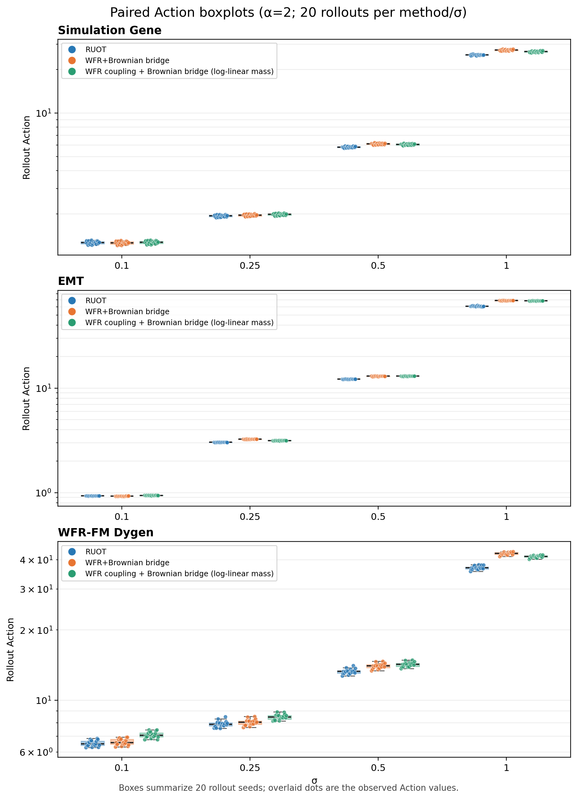

固定 α=2，比较 σ=0.1、0.25、0.5、1.0。数据：Simulation Gene、EMT、WFR-FM Dygen。Dygen 为 WFR-FM 官方 5 维、5 时刻数据（t=0,…,4），来自 WFR-FM 仓库。
RUOT 使用 ψ(g)=g²/2、成对重整化代价及 σ² 熵正则；路径网络为 64×3、3000 步。 WFR+布朗桥使用 α 缩放的 WFR-FM OET 静态代价（δ²=α，含 2α 因子），条件均值与质量沿 WFR geodesic，方差取 σ²t(1−t)。 新增 Baseline 固定使用完全相同的 WFR Coupling，只将中间条件路径换成布朗桥：线性均值、方差 σ²t(1−t)，质量 m_t=P exp(t log(Q/P))。 三个方法使用相同的独立反馈网络 V/G/Score（400 宽、6 个隐藏层，倒数第二隐藏层 Tanh）、30,000 Matching 步、数据、训练种子和 rollout 设置。
Action 使用每组一个已训练模型，基于 20 个配对随机 rollout 种子估计；每个种子三方法共用初始粒子与 Brownian 增量。 图中误差条为 rollout 标准差。W1/W2 和质量误差为该模型标准评测 rollout 的各时刻均值。 同一训练设置仅训练种子 42 一次，因此 rollout 变异不包含重新训练的变异。有限实验比较不能单独证明全局最优性。

散点图中的灰线从 RUOT 连接到同一随机种子的两个 Baseline；箱线图汇总每个数据集、σ 和方法下的 20 个 Action 值。


| 数据 | σ | RUOT Action 均值 | RUOT SD | WFR+BB Action 均值 | WFR+BB SD | WFR−RUOT | 配对 SE | RUOT 更低数 | WFR 更低数 | RUOT W1 | WFR+BB W1 | RUOT W2 | WFR+BB W2 | RUOT 质量误差 | WFR+BB 质量误差 | BB 指数质量 Action 均值 | BB 指数质量 SD | 配对 Action 差 (BB−RUOT) | BB 指数质量 W1 | BB 指数质量 W2 | BB 指数质量误差 | |
|---|---|---|---|---|---|---|---|---|---|---|---|---|---|---|---|---|---|---|---|---|---|---|
| gene | 0.1 | 1.2676 | 0.029104 | 1.26288 | 0.0287456 | -0.00471074 | 0.000133006 | 0 | 20 | 0.0340062 | 0.034044 | 0.190301 | 0.190446 | 0.00623924 | 0.00639128 | 1.27354 | 0.0287977 | 20 | 0.00594693 | 0.0340217 | 0.191148 | 0.00608326 |
| gene | 0.25 | 1.93874 | 0.0297425 | 1.96489 | 0.0296062 | 0.0261512 | 0.000536489 | 20 | 0 | 0.0356336 | 0.0333889 | 0.193343 | 0.18366 | 0.00605726 | 0.0054536 | 1.98647 | 0.0294505 | 20 | 0.0477335 | 0.0326708 | 0.180702 | 0.00361429 |
| gene | 0.5 | 5.81828 | 0.0553632 | 6.1091 | 0.0664295 | 0.290815 | 0.00490786 | 20 | 0 | 0.0388933 | 0.0368752 | 0.191712 | 0.185196 | 0.00349286 | 0.00520414 | 6.06172 | 0.0659298 | 20 | 0.243442 | 0.0379934 | 0.187589 | 0.00557616 |
| gene | 1 | 25.2492 | 0.168036 | 27.2904 | 0.266393 | 2.04121 | 0.044676 | 20 | 0 | 0.0436655 | 0.0416556 | 0.137288 | 0.12299 | 0.002971 | 0.00396749 | 26.6434 | 0.266745 | 20 | 1.39416 | 0.0442864 | 0.119238 | 0.00246767 |
| emt | 0.1 | 0.93333 | 0.00246482 | 0.925902 | 0.00298161 | -0.00742827 | 0.000375445 | 0 | 20 | 0.12528 | 0.126437 | 0.158204 | 0.160337 | 0.000428451 | 0.000717049 | 0.942077 | 0.00282947 | 20 | 0.00874703 | 0.125785 | 0.15941 | 0.00102382 |
| emt | 0.25 | 3.03165 | 0.0104139 | 3.24699 | 0.0123215 | 0.215333 | 0.00102092 | 20 | 0 | 0.151527 | 0.147606 | 0.176169 | 0.173146 | 0.00270983 | 0.000966801 | 3.15042 | 0.0138593 | 20 | 0.118768 | 0.150167 | 0.175201 | 0.000403082 |
| emt | 0.5 | 12.1821 | 0.0351609 | 13.0049 | 0.0553048 | 0.822845 | 0.00724781 | 20 | 0 | 0.183032 | 0.181181 | 0.20628 | 0.204318 | 0.0104395 | 0.000821252 | 13.0295 | 0.0538318 | 20 | 0.847455 | 0.180936 | 0.204127 | 0.000694908 |
| emt | 1 | 60.7786 | 0.455322 | 68.7269 | 0.247209 | 7.94834 | 0.130285 | 20 | 0 | 0.220311 | 0.218268 | 0.245505 | 0.243401 | 0.0108216 | 0.000854737 | 68.4135 | 0.247761 | 20 | 7.63491 | 0.219342 | 0.244542 | 0.000438252 |
| dygen | 0.1 | 6.53356 | 0.182706 | 6.62041 | 0.205626 | 0.0868481 | 0.0114494 | 20 | 0 | 0.12403 | 0.139613 | 0.456501 | 0.512316 | 0.0439522 | 0.0391998 | 7.11283 | 0.211348 | 20 | 0.579269 | 0.119605 | 0.455617 | 0.0369879 |
| dygen | 0.25 | 7.90608 | 0.230388 | 8.03623 | 0.233406 | 0.130146 | 0.0119345 | 20 | 0 | 0.132986 | 0.113641 | 0.463463 | 0.398286 | 0.0452401 | 0.0340671 | 8.48261 | 0.2294 | 20 | 0.576524 | 0.117129 | 0.412642 | 0.0307141 |
| dygen | 0.5 | 13.2835 | 0.324021 | 14.0243 | 0.339724 | 0.740799 | 0.0194307 | 20 | 0 | 0.109439 | 0.12745 | 0.234723 | 0.366155 | 0.0265577 | 0.0146965 | 14.2514 | 0.31762 | 20 | 0.967885 | 0.106837 | 0.211409 | 0.0108808 |
| dygen | 1 | 36.9803 | 0.644916 | 42.5481 | 0.552298 | 5.56773 | 0.0681766 | 20 | 0 | 0.176397 | 0.163457 | 0.399409 | 0.37303 | 0.0151118 | 0.0161141 | 41.3129 | 0.449032 | 20 | 4.33258 | 0.148879 | 0.283617 | 0.00505434 |